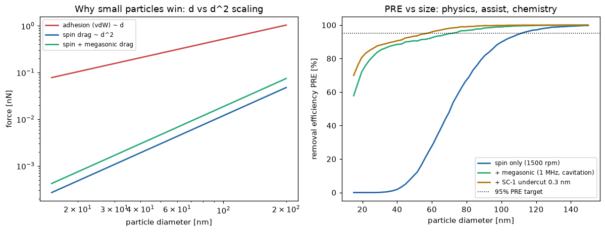
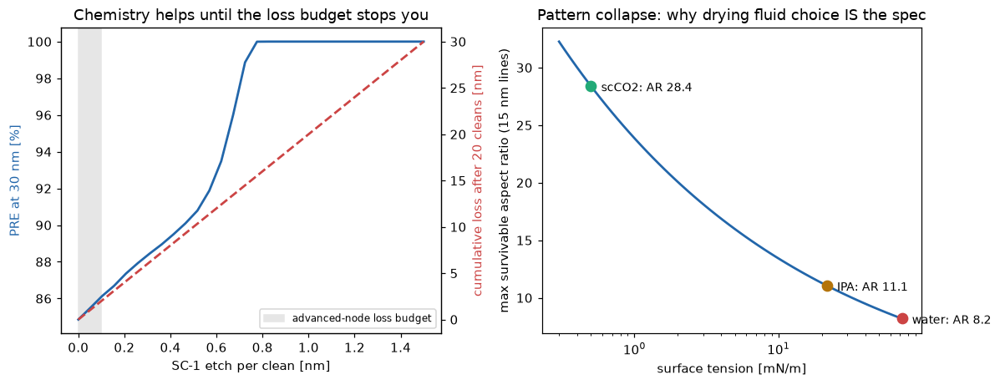
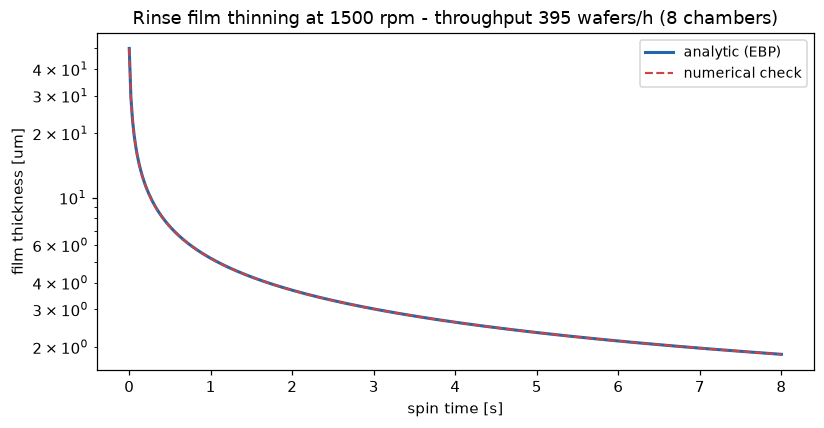

単枚スピン洗浄装置の中の物理をゼロから実装。先端ノードの洗浄は30nm以下の粒子を、膜を数Å以上削らず、10:1パターンを倒さずに取るという三重拘束の最適化問題——付着力学・キャビテーション・薬液アンダーカット・毛管倒壊・スピン薄膜動力学を1本のモジュールで定量化した。
付着はvan der Waals力で∝ d、流体抗力は境界層せん断で∝ d²——直径が半分になると抗力だけ4倍不利になる。この次数の差が「小粒子問題」の正体。除去は転がりモーメント判定（抗力×腕1.4r vs 付着×接触半径）＋表面粗さ起因の対数正規ばらつきでモンテカルロ評価。メガソニック（1MHz）は音響流のせん断でなくキャビテーション・マイクロジェット（衝撃圧×粒子断面積、確率的ヒット）が支配——それでも∝d²なので最小粒子は最後まで残る。

結果：スピンのみ（1500rpm）はPRE 100nmで90%だが30nmで0%。メガソニックで30nm 85%・50nm 91%まで拡張、SC-1 0.3nmアンダーカット追加で88%/94%。出所：cleaning/spin_clean.py。
SC-1は粒子の接触部の下を等方エッチし、接触半径（≈0.8nm）を食い切ると粒子は完全解放（PRE=100%）。だがエッチ量＝材料損失であり、先端ノードの損失予算は0.1nm/回——完全アンダーカットに必要な0.8nmの8分の1しか使えない。20回洗浄の累積損失（右軸）が「化学で全部解決」を封じる。物理（メガソニック）と化学（微量エッチ）の分担設計こそが洗浄レシピ開発。

右図は③パターン倒壊：乾燥時の毛管圧 2σcosθ/S が隣接ラインを引き寄せ、たわみ>S/2で倒壊。倒壊限界ARはσ^(-1/4)則（実装で解析検証）——水(72mN/m)でAR 8.2、IPA(21.7)で11.1、超臨界CO₂(≈0)で28.4。「乾燥流体の選択＝装置スペック」の理由。
リンス液膜は dh/dt = −2ρω²h³/(3μ) で薄化（解析解 vs 数値積分の一致で実装検証、誤差<2%）。薬液30s＋リンス20s＋乾燥15s＋搬送8sのシーケンスで8チャンバ 394枚/時。①〜③の物理予算（PRE・損失・倒壊）を守った上でこの数字を出すのが装置設計。
